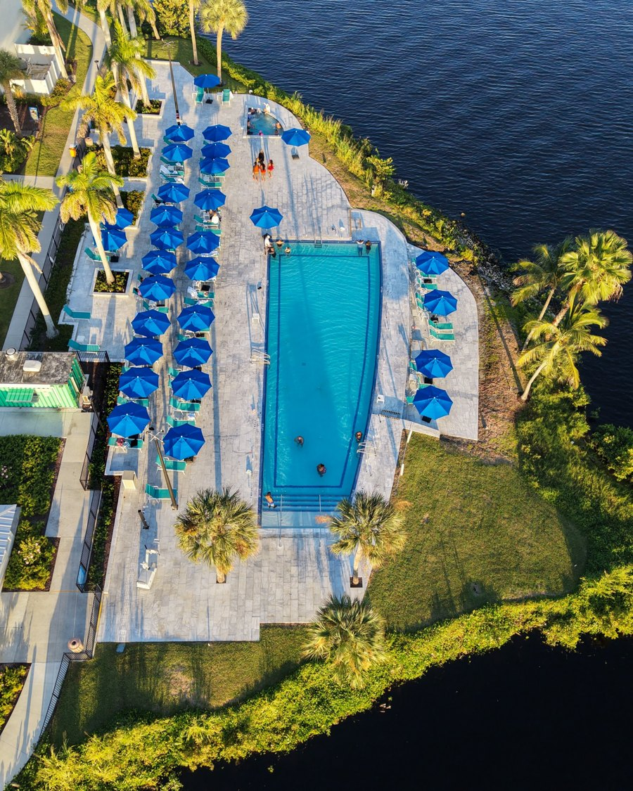
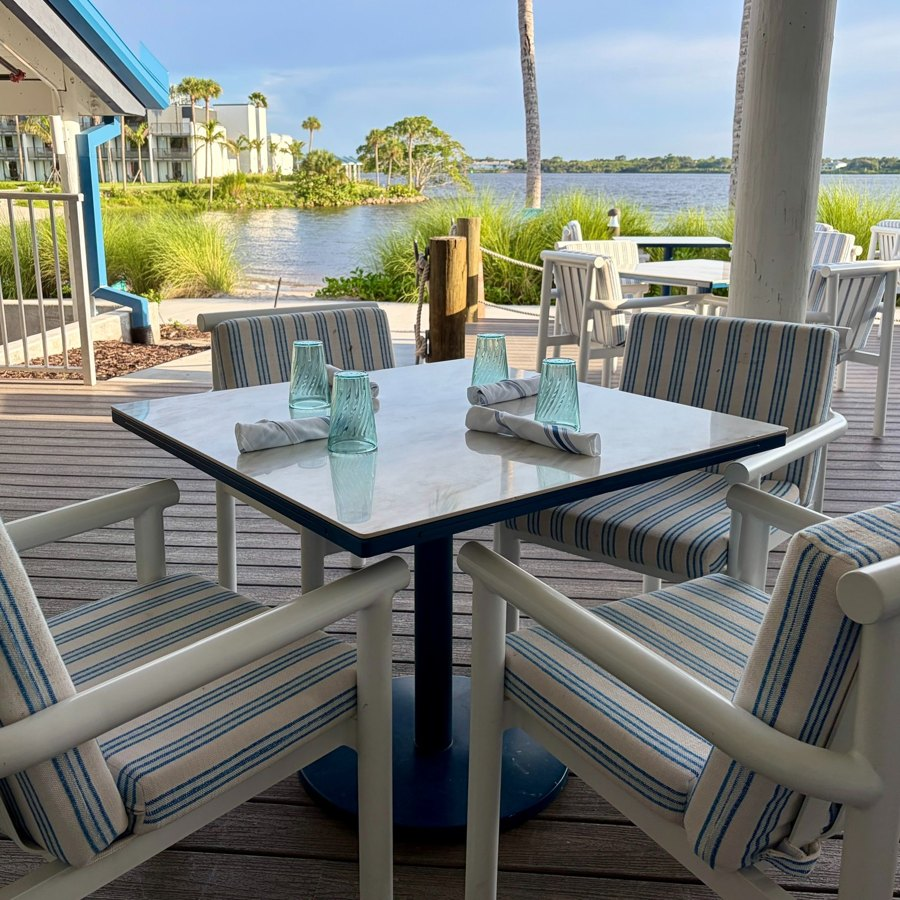
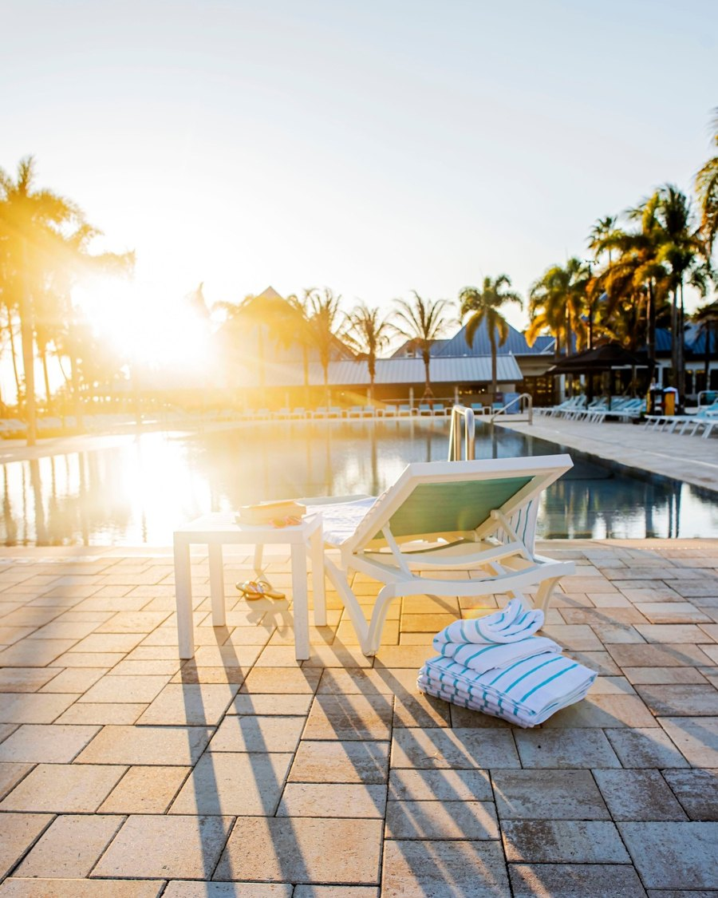
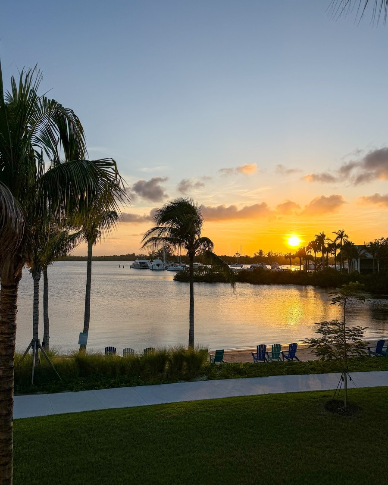
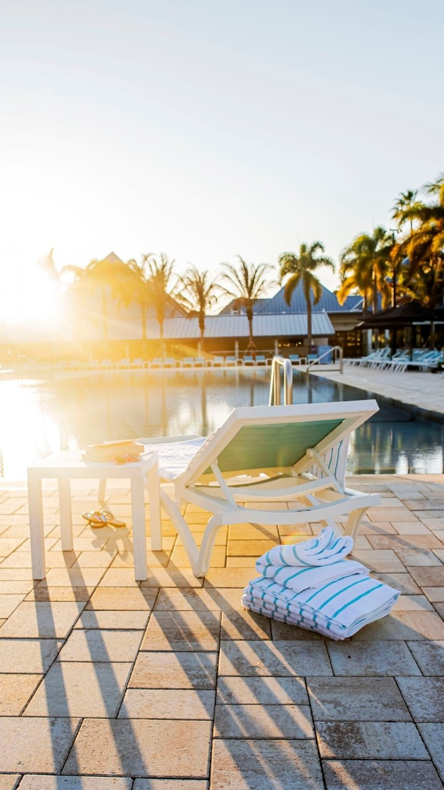

Process
From four photographs to five cuts
Each step below is one stage of the pipeline, in the order it ran.
1Source stills
Four people-light photographs chosen from the resort's Instagram feed.




2Analysis
Each still was analysed for light, palette, depth layers, the elements that can move naturally (water, palms, umbrellas, clouds) and the camera move that suits its composition. Stills were then cropped to 9:16 around the focal point.
3Storyboard
Concept. A golden hour journey through voco Sandpiper's waterfront sanctuary, where family moments meet riverside luxury in Florida's only all-inclusive resort.
Arc. Arrive from above over the riverfront pool, come down to the table at the water's edge, settle into golden light by the pool, and close on the sun going down over the river.

Shot 1
Aerial pool
Camera: slow descending aerial crane down toward the centre of the pool
Motion: Pool water shimmers and ripples, blue umbrella canopies flutter lightly, palm fronds sway, the river surface moves with slow ripples. The few guests already on the deck and in the pool move subtly and naturally; do not add or remove people
Opening establishing shot: the whole riverfront pool deck from above, in daylight

Shot 2
Riverside dining
Camera: slow lateral slide from right to left, the table staying anchored in frame
Motion: Gentle water ripples on the river surface, palm fronds swaying softly in breeze, ornamental grasses moving subtly, glassware catching light reflections, rope barrier swaying slightly
Drops from the aerial to eye level at the water's edge; palette stays blue and white

Shot 3
Sunset pool
Camera: gentle vertical rise from low over the pavers and towels up toward the pool and sunlit palms
Motion: Pool water rippling with golden reflections, palm fronds swaying against backlight, towel fabric moving subtly in breeze, lens flare shimmering organically, shadows shifting on pavers
Cut on warmth: daylight turns to golden backlight, dining gives way to the pool

Shot 4
River sunset
Camera: slow push in toward the setting sun over the river
Motion: Water ripples and reflections shimmering, palm fronds swaying in evening breeze, clouds drifting slowly across gradient sky, boats rocking gently, grass moving subtly
Closer: the frame opens onto the river and the sun, holding the golden hour
4Music and sync
Five instrumental directions were generated. Each track's beats were mapped, and the edit was re-timed for each one so every cut lands on a bar line. The bars below show how long each shot holds in each version.
Camp, glamorous cinematic pop score: sweeping lush strings, bold brass stabs, timpani and harp glissandi over a confident modern beat with punchy drums and a playful, theatrical wink.
Modern take on a 1960s French New Wave film soundtrack: cool brushed drums, walking upright bass, vibraphone and muted trumpet, chic and effortless, with crisp contemporary production.
Modern Italian pop: bright sunlit hook, punchy four-on-the-floor drums, warm electric bass, shimmering synths and clean rhythm guitar, stylish Mediterranean summer radio hit feel.
Modern Italian art pop: elegant and slightly off-kilter, analog synth arpeggios, warm Rhodes piano, melodic bass, crisp drum machine and cinematic string swells, sophisticated and sun-drenched.
Modern French art pop: dreamy chic synth-pop, melodic French-touch bassline, tight drum machine groove, airy vintage synth pads and a wistful lead melody, stylish and nostalgic.
5Motion
Each storyboard frame was animated twice at 4K from the cropped still, long enough to cover its longest slot across all five edits. The preferred take of each shot was selected for the cut. See every take next to its source photo →
6Finish
Takes were cut to the beat grid, the music laid under, and each version exported for social: 9:16, 1080×1920, 30 fps, loudness −14 LUFS. See the five final cuts →